Nuestra Infraestructura
Espacios diseñados para inspirar el aprendizaje y el desarrollo integral
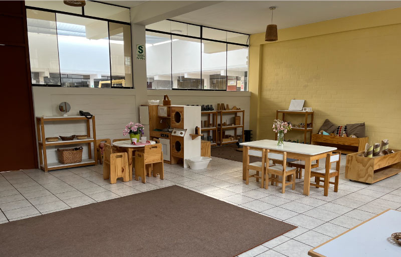
Aula | Inicial
Entornos seguros y estimulantes, diseñados especialmente para el desarrollo de los más pequeños.

Aulas | Primaria y Secundaria
Espacios amplios, climatizados y equipados con tecnología interactiva y mobiliario ergonómico.
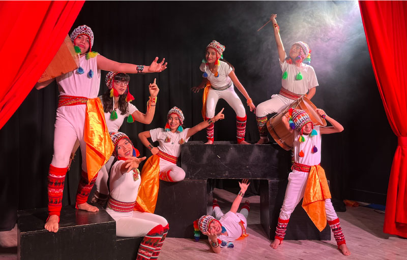
Atelier de Teatro
Espacio dedicado al desarrollo de las artes escénicas, expresión corporal y creatividad.
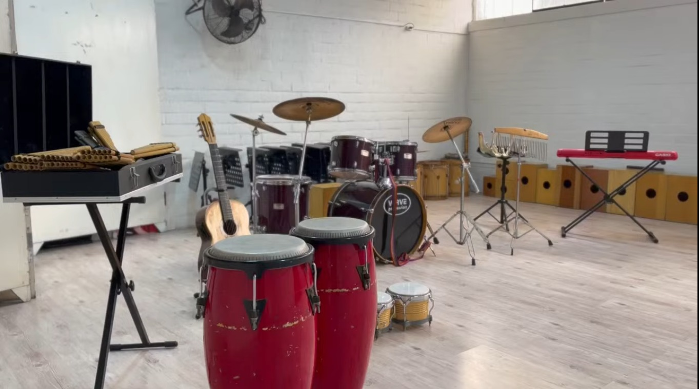
Atelier de Musica
Ambiente diseñado para la exploración sonora y el aprendizaje de instrumentos, fomentando la sensibilidad artística.
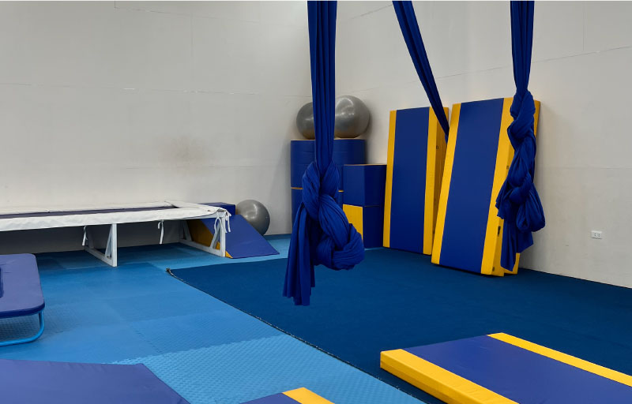
Atelier de Movimiento
Infraestructura deportiva diseñada para la práctica de gimnasia y desarrollo físico.
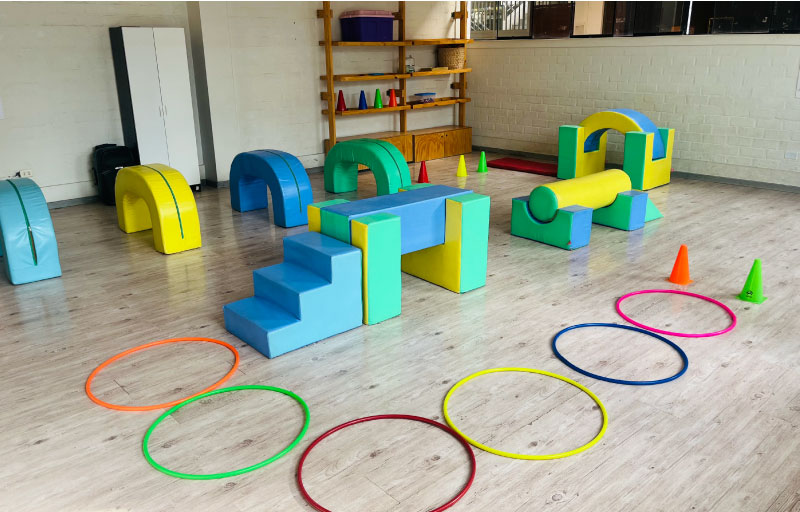
Sala de psicomotricidad
Área acondicionada para el desarrollo motor, coordinación y equilibrio de nuestros estudiantes.
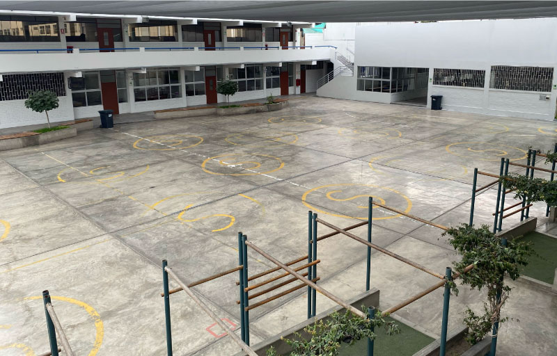
Patio | Primaria y Secundaria
Amplios espacios al aire libre para el esparcimiento, socialización y recreación de los alumnos.
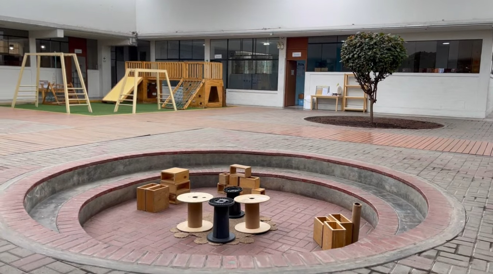
Patio | Inicial
Espacio de juego seguro y recreativo diseñado exclusivamente para las necesidades de nuestros estudiantes más pequeños.
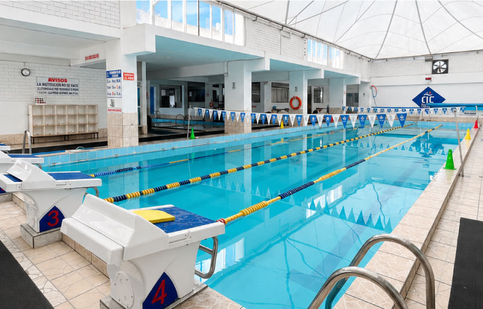
Piscina
Piscinas techadas y temperadas que permiten actividades acuáticas todo el año, en un entorno seguro y cómodo, promoviendo el deporte y la disciplina.
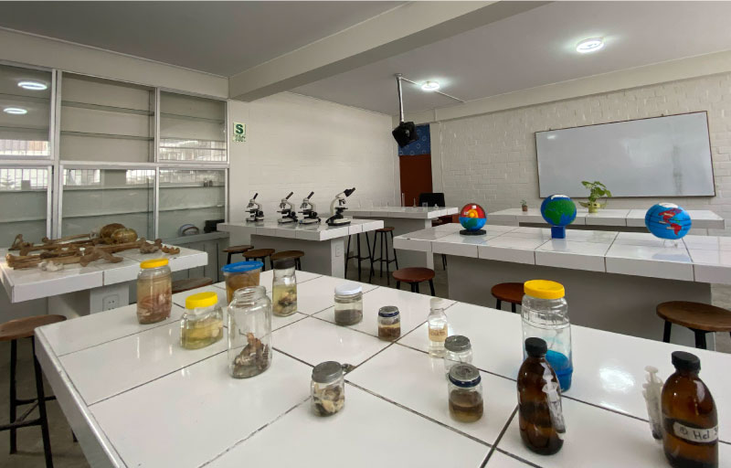
Laboratorio de Ciencias
Equipado para el aprendizaje práctico, donde los estudiantes experimentan, investigan y desarrollan habilidades científicas en un entorno seguro.
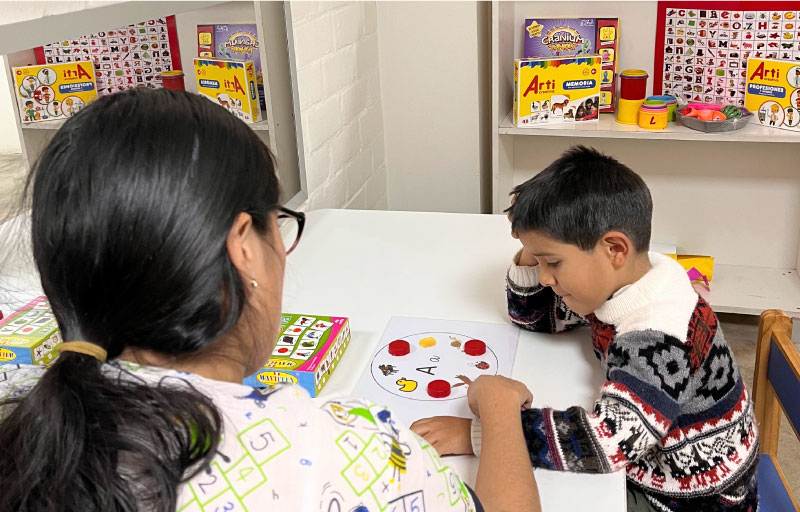
Consultorios de Psicología
Espacios privados y acogedores para brindar soporte emocional y orientación psicopedagógica a nuestros estudiantes.
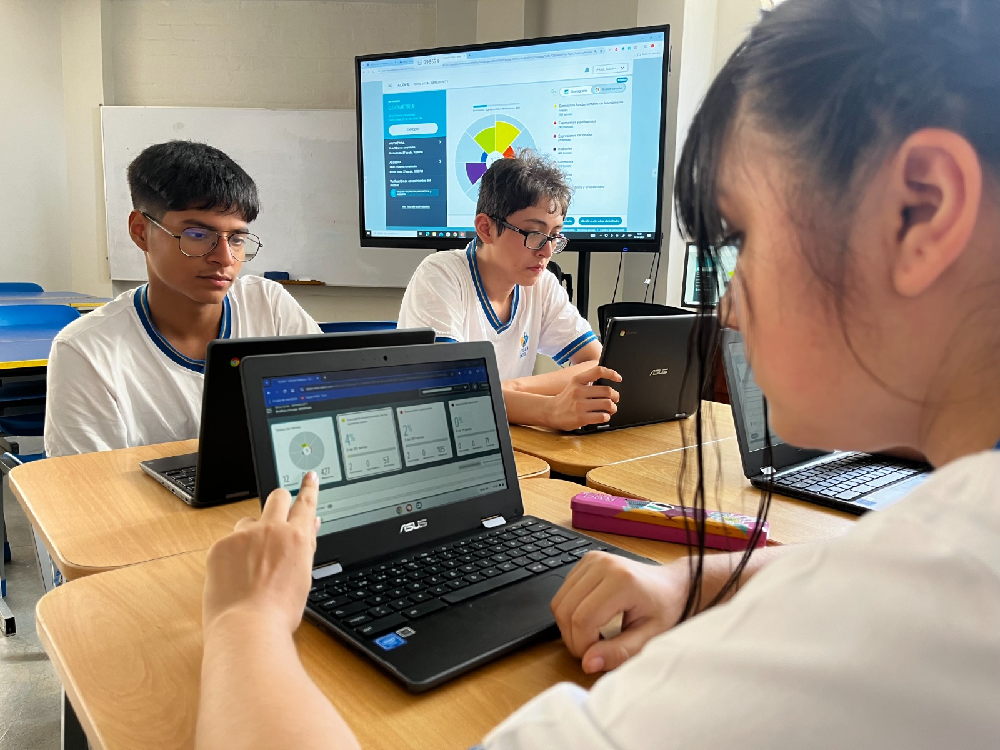
Conectividad Total
Infraestructura tecnológica de alta velocidad y cobertura total para potenciar el aprendizaje digital en todo el campus.